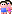

La deuxième entité importante est la famille. Elle lie des individus et est traitée comme une entité séparée pour tenir compte des cas, où l'un des conjoints, voir même les deux, est inconnu.
Lorsque vous créez une entité en cliquant sur , GenJ va vous demander quelques renseignements primordiaux. Ensuite vous allez alors pouvoir spécifier une relation à l'égard d'une autre entité dans votre fichier. Simplement cliquez sur un individu dans la visualisation de l'Arbre généalogique ou dans la Table des Données et vous pouvez choisir à partir des boutons radio si cet individu est parent ou enfant (à condition qu'il ne soit pas déjà enfant dans une autre famille) dans cette famille. Faites votre choix et cliquez sur Créer.
En éditant une Famille dans la Fenêtre d'édition vous devez coller le plus près possible à la norme Gedcom. Une famille typique comprend les informations suivantes :
@F001@ FAM WIFE @I002@ HUSB @I001@ MARR DATE 1964 PLAC Flagstaff, USA CHIL @I004@ CHIL @I005@ CHIL @I008@
Parcourez les propriétés de vos familles et modifiez les. Quand vous ajoutez de nouvelles propriétés, choisissez les dans la liste prédéfinie ou si cela s'avère nécessaire et que vous ayez des besoins particuliers, ajoutez de nouvelles étiquettes de propriétés.
Une fonction importante de Gedcom est sa capacité à créer des liens entre des entités. Normalement les familles ne sont pas désunies - elles comprennent un mari, une femme ou des enfants. A chaque fois que vous créez une nouvelle Famille associée à des personnes, celles-ci sont liées par le biais de propriétés. Ces propriétés pour les familles sont HUSB (le mari), WIFE (la femme) ou CHIL (l'enfant). Les propriétés se rattachent à l'individu par son id. Vous pouvez explorer les relations entre les familles et les individus en suivant ces liens. Soyez prudent quand vous supprimez ou créez de nouveaux liens - avoir une vue d'ensemble de l'intégrité référentielle n'est pas facile :).
Prenons à nouveau l'exemple donné à la section relative à l'Individu : Vous avez votre arbre généalogique et découvrez qu'un ancêtre de la soeur d'une épouse a épousé le frère de celui-ci. Tous ces individus sont déjà dans votre arbre! Vous pouvez maintenant créer une nouvelle famille pour ce lien nouvellement découvert. Mais vous ne voulez pas créer un nouvel individu - vous voulez lier des entités existantes! La solution : Choisissez la nouvelle famille pour le frère de votre ancêtre et ajoutez-y une propriété WIFE. Changez-la alors pour pointer sur la soeur en entrant son ID. En cliquant sur le bouton de liaison, une propriété FAMS sera automatiquement ajoutée à la soeur. La boucle est bouclée.